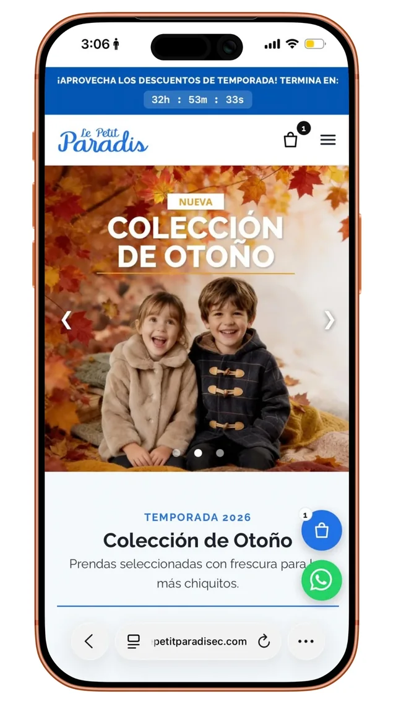
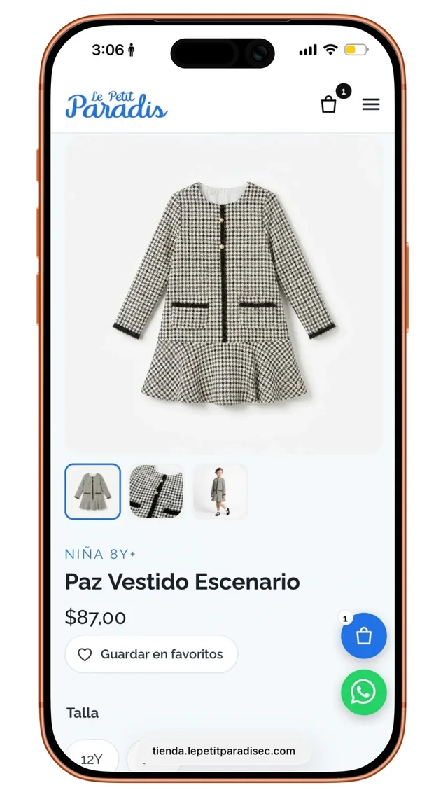
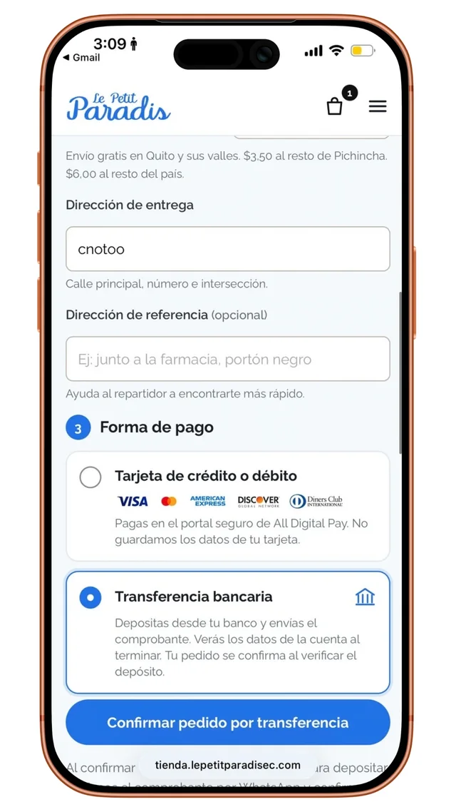
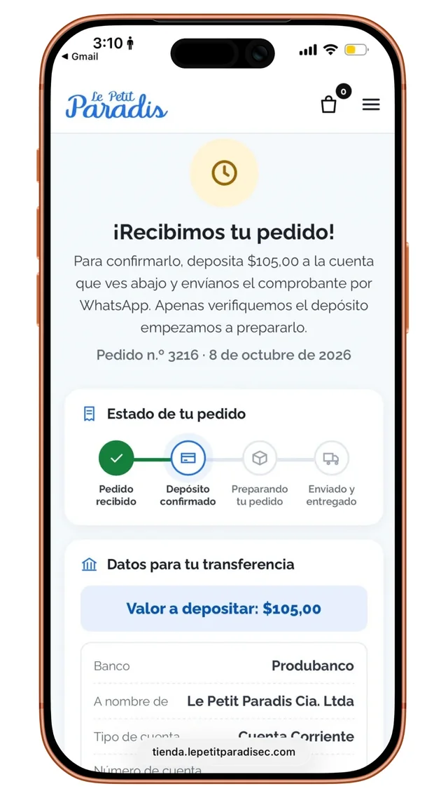

A shop a parent
can trust.
Online store for children’s clothing in Ecuador. Designed around age, trust and a short checkout.




Empathize · Define
Who buys, and what stops her
Persona and pain points are a design synthesis, to be validated with interviews and store data.
Carolina, 32
Working mom in Quito, shops on her phone.
Goal: Right clothes for her child’s age, fast.
Fear: Paying online, then hearing the size is gone.
- Unknown shopShow proof and a human channel first
- Types, not agesOrganize the catalog by age
- Size and stock doubtsMake unavailable sizes impossible to buy
- Fear of paying onlineOffer a path that feels safe
Customer journey
From first tap to second purchase
Tap a stop on the path
-
Stage 1 of 5
Awareness
Curious, waryA parent hears about the shop and decides if it feels real.
Does
- Sees an Instagram post or a link from another mom
- Opens the shop on her phone
- Looks for signs it is a real business
Touchpoints: Instagram, WhatsApp, shared link
Thinks
“Is this shop real? Will my order actually arrive?”
Pain point
An unknown shop with no proof of other buyers.
HMW show a real business in the first screen?
Design response
Testimonials carousel and a WhatsApp button visible on the home.
Social proofRisk reductionMeasure: Home bounce rate, clicks to WhatsApp -
Stage 2 of 5
Consideration
ExploringShe looks for the right clothes for her child’s age.
Does
- Picks an age category
- Applies fixed filters (size, price)
- Checks best sellers and similar items
Touchpoints: Home, categories, filters
Thinks
“Where are the things for a 3 year old girl?”
Pain point
Catalogs organized by product type, not by age; endless scrolling.
HMW let a parent shop the way she thinks, by age?
Design response
Age-based categories, sticky filters, best sellers capped at 4 and similar products.
Match with the real worldHick’s lawMeasure: Product views per session -
Stage 3 of 5
Decision
AnxiousShe chooses a size, pays and needs to be sure it worked.
Does
- Selects a size with real stock
- Opens the side cart
- Goes through a short checkout
- Pays by card or transfer
Touchpoints: Product page, cart, checkout
Thinks
“Will it fit? Is it safe to pay here?”
Pain point
Sizes shown but out of stock, long forms and fear of paying online.
HMW make paying feel as safe as paying a person?
Design response
Unavailable sizes cannot be chosen; side cart with animation; progressive checkout with shipping by zone ($0 Quito and valleys, $3.50 Pichincha, $6 national); transfer data with WhatsApp backup; a clear 20 to 30 s waiting message.
Error preventionProgressive disclosureVisibility of statusMeasure: Checkout completion, payment drop-off -
Stage 4 of 5
Retention
ReassuredShe gets confirmation, follows the order and comes back.
Does
- Reads the detailed confirmation
- Follows the order status
- Is kindly invited to log in
- Saves favorites for later
Touchpoints: Confirmation page, WhatsApp, account
Thinks
“Did it go through? When does it arrive?”
Pain point
Silence right after paying.
HMW keep her informed without asking her to chase us?
Design response
Detailed confirmation, optional account (password eye, recovery) and a favorites list.
Visibility of statusUser controlMeasure: Repeat purchases, accounts created -
Stage 5 of 5
Advocacy
ProudShe recommends the shop to other parents. A hypothesis to validate.
Does
- Shares the shop with another mom
- Leaves feedback after the order
- Returns for the next size
Touchpoints: WhatsApp, Instagram
Thinks
“That was easy, I will tell my friend.”
Pain point
Nothing invites her to share or return.
HMW turn a good first purchase into a recommendation?
Design response
Real testimonials feed the next buyer’s trust; favorites and the next-size reminder bring her back.
Social proofPeak-end ruleMeasure: Referrals, returning customers
Design synthesis from the brief and how the business sells. Not interview data; to be validated with real shoppers.
Key decisions
Decision, reason, principle
Home
- Floating cart and WhatsAppAlways in reach, and a human option for the doubtful.Fitts’s lawRisk reduction
- Categories grouped by ageMatches how a parent shops.Match with real world
- Testimonials carouselProof from other parents, without leaving the page.Social proof
Product
- Real stock per sizeSizes with no units can’t be added, quantity is capped.Error prevention
- Age tag, gallery, favoritesFit and options clear at a glance.Recognition over recall
- Benefits, size guide, shipping, exchanges in viewAnswers the doubts before she asks.Reduce uncertainty
- WhatsApp button with the product nameNo need to explain again.Reduce effort
Checkout
- Sections open as each one is filledContact, shipping, payment: short at every step.Progressive disclosure
- Reference address fieldHelps the courier find the door.Localisation
- Shipping by zone, shown before payingQuito and valleys free, Pichincha $3.50, national $6.Transparency
- Card or bank transferCard logos shown; transfer for those who prefer it.ChoiceTrust signals
- “Wait 20 to 30 seconds” messageStops reloads and double payments.Reassurance
After paying
- Order tracker in four stepsShe always knows what comes next.Visibility of status
- Amount and bank details on screenNo hunting for data, and WhatsApp to send the proof.Closure
- Account with password toggle, recovery, favoritesThe second purchase is faster than the first.Efficiency
Measure
What gets measured
Meta Pixel + Conversions API and GA4 + GTM send the same events from browser and server, loaded lazily. Payments are marked paid only when the gateway confirms.
Persona, journey and validation points are hypotheses. Results will be added once there is data.